I love the internet, I grew up alongside it. It became my playground, my home, and eventually my career.
That career, just like the internet, evolved chaotically, but the constant has always been: understanding and communicating complicated things, in a way that feels human.
I've had an uncanny ability to connect dots and patterns - and tell the story of what's happening, how it works, and why it matters. That's been true across advertising (I was a strategist first), content, startups, e-comm and now moved onto the most complicated concept I've ever tackled: technology, and what it's doing to all of us.
I've worked with Adult Swim, TikTok, The Big Lez Show, The Kid Laroi, Time, Gatorade, Shopify, Canva, Airbnb, Nintendo, Samsung, Universal Music, Dallas Mavericks, Ted Danson, Bobby Lee, Brown Cardigan - the list is honestly endless, stretching to even things like tobacco, gambling and fast food, the deadly sins, as well as things I care more deeply about like mental health and charity.
I co-founded e-comm brand Step One (now publicly listed) and Struthless Studios building original IP, including a 1million YouTube sub channel. Content I've made has over 100million views and 4million hours watched, these are insane numbers to me that I can't really comprehend, this was all pre-AI, too.
Right now I'm making films about the internet: investigations, interviews and explainers about tech going well (or not) for the world. I also built Rosetta, a public library of the internet.
I'm approaching this with an investigative but optimistic lens - this technology can change the world and make it a better place, but if we don't take the right steps, it could all be over. So what are those steps?
If you're building something complicated and struggling to communicate it - maybe I can help. If you're looking at AI and wondering "what is this, how can I use it" - maybe I can also help. And if it's tech that could genuinely save the world, please, reach out, I care as much as you do.
Originally produced as a video for Struthless. A story about motivation, commitment devices, and how the finish line kills your former self.
Quick hypothetical. Could you run a marathon right now? Probably not. But what if there was a gun to your head?
Suddenly you discover a weird truth: you are capable of more than you think, provided the stakes are high enough. The problem is, in real life, nobody is holding a gun to your head. So the question becomes: can you create stakes that feel just as real?
The Dumbest Commitment Device Ever
I made a plan so stupid it almost worked.
I filmed a video that would get me cancelled, scheduled it to go live in 24 hours, then handed over my wallet and locked myself out of YouTube. The only way to stop that video was to get back to my laptop. The laptop was 42.2 kilometres away.
So now running a marathon was not a fitness goal. It was damage control.
This is what psychologists call a Ulysses pact, a commitment you make while thinking clearly to protect you from the version of you who will panic, bargain, and quit later.
Burning the Ships
The idea shows up everywhere. Cortez allegedly burned his ships so his men could not retreat. Some birds teach their chicks to fly by throwing them out of the nest. Brutal, but simple: there is only forward.
I got dropped off 42.2 kilometres away from my computer, and then I started running.
Chaos, Wrong Turns, and an Underwater Route
I decided to do this less than 24 hours earlier, so of course the route was chaos. High tide swallowed chunks of my planned path. I got lost. I ended up in somebody's backyard. And the whole time the thought that kept me moving was: I can't not do it.
There is an odd comfort in that. When you remove the option to quit, the mind stops negotiating and starts solving.
The Moment I Quit (and Didn't)
At around the 32K mark I hit the wall. Dizzy, vomiting, genuinely cooked. I decided to stop.
Then my friends did what good friends do: they did not care about the bit, they cared about me. And somehow, the cheesiest sports-movie monologue you have ever heard got me moving again.
The Second Half Was the Easiest
There is a saying about marathons: the first half is the first 20 miles, and the second half is the final six. Same effort, different distances.
I braced for hell. But that final 10K was the easiest 10K I have ever run. Light, smooth, fast. Somewhere along the way, the motivation device faded into the background and it just became, simply, a run.
What Actually Ends at the Finish Line
A few days later I realised something. I used to see marathons as bucket list items: once you do it, it is done. But finishing did not feel like the end of a book. It opened up a world of possibility.
When you cross a finish line, literal or metaphorical, the thing that ends is not the activity. You will run again. The thing that ends is your former self, the person who thought it was impossible.
Originally produced as a video documentary for Struthless in November 2022. Directed by Campbell Walker & Aaron McLachlan. Produced by Aaron McLachlan & Billy Guest. 1.35M+ views.
Take a good look around you right now. Just take in your surroundings. Then ask yourself this: How much influence do you think your environment has over your life?
That's one of those questions I never really bothered to ask myself—until I stumbled across something that changed how I think about everything around me.
The Doritos Hack
I was on the self-improvement side of YouTube one day when I came across Tom Bilyeu talking about, of all things, Doritos. The dusty orange triangle chip.
He was talking about how he used to struggle with addictive eating, and how it was one of those habits he found really hard to break. Then out of nowhere he just goes: "I find it really hard to eat one Dorito, and really easy to eat zero."
He explained: "Because if I eat one Dorito, I will eat the rest of the Doritos. I find it really hard to stop, so my solution is to not start. And the way that I do that is I don't bring Doritos into my house."
I was embarrassed because I was really attracted to how lazy this was. Instead of using willpower or discipline, he just outsourced it all to his environment. He just didn't bring Doritos into the house, and then the work was done. Plus the results were there for him—he went from struggling with his weight to transforming his physique entirely.
The Dorito hack got me curious: What am I doing the hard way that my environment could do the easy way? How else can I use the space around me to improve my life?
The Pine Tree Study
Our story starts in 1984. Not that 1984—this 1984. Baby Jazzercise on cocaine time.
Our main character is Roger Ulrich, and he has just published a landmark paper. See, Roger had this theory, and he'd been toying with it for a while. When he was a teenager, he suffered from kidney disease and spent a lot of time in hospitals and recovering in his own bed.
He found that the hospitals would be grim and bland, and he didn't really like them. But in his own bed, he had this window, and he'd just become fixated with this big, beautiful pine tree. In the simplest words ever: this tree made him happy.
He eventually, thankfully, gets healthy, grows up, becomes an adult—but he keeps thinking about this tree. Intuitively he knew that this tree made him feel good. But Roger wanted to prove it.
So he devises an experiment.
Between 1972 and 1981, Roger does a test on 46 patients, all in the same boat. They're all recovering from gallbladder surgery. They're in the same type of hospital beds, getting the same type of care, all healing from the same thing.
But they don't all heal the same.
Why?
Back to the pine trees, Roger.
Their environment.
He put half of the patients staring out at a beautiful view—trees, sunshine, nature. Basically replicating his childhood bedroom. The other half of the patients had a window still, but staring at a brick wall. Almost no natural light. Pretty grim and bland.
Now, as you might have guessed, the patients with the beautiful view were just a lot happier. But what's cooler is it didn't stop there:
They healed faster
Received fewer negative evaluations from nurses
Ingested far less painkillers
Roger argued that this beautiful view made them recover quicker.
So if something as simple as a window or a pine tree can change your body, imagine what changing your environment can do to your entire life.
The Soldier Study
Here's where it gets even more interesting.
There were American soldiers in Afghanistan who had developed pretty gnarly heroin addictions during their service. While they were fighting in the war, no matter what they tried, they just couldn't quit. All of their superiors were understandably really worried—how are we going to reintegrate these guys back into society? They didn't have heroin problems back in the States, now they have heroin problems. This is horrible for these people.
But the weirdest thing happened.
When these soldiers did go to reintegrate back into civilian life, a lot of them found it—not easy, but doable—to kick these very bad heroin addictions. This, as you can imagine, baffled researchers.
What they put it down to was environment.
Different environments make people think and behave in different frames. When they were surrounded by reminders that they were a jaded, heroin-addicted soldier, they thought and acted like a jaded, heroin-addicted soldier. But when they were reminded of the person that they were before, they acted a lot more like that person.
The story really resonated with me because at the time I was living in this sharehouse—and it wasn't nice. The couch had a Dorito-sized hole in it (keeping with the theme), our plates didn't match, our cutlery didn't match. It was a classic 20-something situation.
But here's the thing: we weren't 20-somethings anymore. We were in our 30s, and this space was constantly reminding us that we were still those 20-something ragtag people. It was holding us back from becoming who we wanted to be.
The Identity Shift
The practical part is to basically make your surroundings as close to the "best version of you" surroundings as you can.
What we're doing is using the power of identity to create tangible reminders that we are becoming this person.
This might sound simple, but it's incredibly powerful. When your environment reflects the person you want to become, you naturally start acting like that person.
So I made a change. I moved out, found a nicer place, and started surrounding myself with things that reflected who I wanted to be—not who I used to be.
We got a Dyson (damn it if I didn't want to Dyson). We got matching plates. We made the space nice. And you know what? Instead of being constantly reminded that we were 20-something ratbags, we were now constantly reminded that we wanted to build a nice, lovely, stable life.
It's been awesome. The nicest place to just hang out.
The Framework
Here's how to think about this:
1. The Dorito Principle: Make bad choices hard
Don't bring the Doritos into the house. Don't rely on willpower when you can design your environment to do the work for you.
2. The Pine Tree Effect: Add what heals
Roger's patients healed faster looking at trees. What's the equivalent in your life? Natural light? Plants? Clean spaces? Art that inspires you?
3. The Soldier Reset: Remove identity anchors
Are there things in your space that remind you of who you used to be instead of who you're becoming? The old couch, the mismatched plates, the college poster—these aren't just objects. They're identity anchors pulling you backward.
4. The Best-Self Environment
Ask: What would the environment of the person I want to become look like? Then start building it, piece by piece.
Your Space Is Working Whether You Want It To Or Not
Your environment is never neutral. It's either supporting the life you want or reinforcing the life you're trying to leave behind.
The beauty of this approach is how lazy it is. You're not fighting yourself every day with willpower. You're setting up your space to do the heavy lifting for you.
So take another look around. What's your space telling you about who you are? And more importantly—is that who you want to be?
Originally created for Struthless in April 2023. A story about creativity, failure, and why the goals you abandon can teach you more than the ones you hit.
Everybody knows country music, and a lot of people hate it. I am one of those people.
But this is not actually about country music. It is about why we chase some goals, then quietly abandon others, even when we still care.
The Dream I Gave Up On
I wanted to write a country song for twenty years, ever since Johnny Cash delivered the line, "I shot a man in Reno just to watch him die." That lyric lit my brain on fire. I call that feeling an astral yeehaw, the moment art makes you leave the planet.
Meet Adam (My Half a Plan)
I found a half a plan in a one-bedroom cabin in the middle of nowhere. Adam had the voice, the chaos, and the willingness to say yes. So we hit the road.
Hiccups
I have another name. A mistake, a slip, a wrong turn that becomes interesting, I call a hiccup. I know hiccups are the path when I draw, but the moment I picked up a mandolin, I forgot the lesson.
The less open you are to failure, the less open you are to success.
My favourite example is a Dolly Parton recording where she giggles mid-heartbreak. It was not planned, and it is perfect. The hiccup becomes the astral yeehaw.
Pressure Off
When we took the pressure off, the song started finding us. So off that I was not even filming anymore, I was outside cooking sausages, and in the background you could hear the track being written in under an hour.
Why We Abandon Goals
There are a million reasons we abandon goals. Sometimes life gets in the way. Sometimes it is self-sabotage. I do not have a universal answer.
But I realised something related. The goals we abandon can do more for us than hitting them ever could. Failure teaches us in a way success does not.
In weirder words, the goals we hit are the astral yeehaws, and the ones we give up on are the hiccups. And the hiccups are not the opposite of yeehaws. They are the key that unlocks them.
Originally created for Struthless in December 2022. 340K+ views. Based on research into motivation, negativity bias, and the psychology of using setbacks to fuel forward momentum.
Can your negativity, your insecurities, your demons, your tragedies—whatever they are—can they be used to improve your life?
The question sounds controversial, maybe even toxic. We live in a world where the cultural message is clear: unless you're doing something for the most altruistic, positive reason, don't do it at all. World peace, right? But what happens when that pure motivation feels inaccessible? What happens when you need to start the car but can't find the keys?
Beyond "Find Your Why"
Nietzsche said, "He who has a why to live for can bear with almost any how." This quote resonated with Holocaust survivor Victor Frankl and eventually found its way onto LinkedIn in the form of Simon Sinek's 2017 book Find Your Why. The core concept is simple: if you know why you want to do something or why you exist, then the how, the what, the who, and the where will all fall into place. Where there's a will, there's a way.
I agree completely. But what happens when that will feels inaccessible?
Instead of just finding your why, what if you could find your dark why?
What Is a Dark Why?
A dark why, just like a regular why, is a motivating reason for doing something. Unlike the lofty, positive why we're told to seek, this one's made up of things you don't really want to broadcast about yourself: anger, jealousy, insecurity, revenge, guilt, shame, disgust. All of these "bad" qualities that we'd rather be rid of. But before we discard them, why don't we just use them?
Your dark why is your way of using insecurities to improve your life. What you're looking for is energy—emotional energy. Doesn't matter if it's good or bad. You just want some sort of power source that you can use.
Think of it like a car. Motivation is a full tank of petrol. To access that tank, you need to start the car. Traditionally, that means using the keys—your positive why. But if you can't find your keys, if you can't find that positivity, there's another option: you could hotwire it. You can bypass that ignition switch and get that motor started with a dark why. Hot-wiring might not be encouraged, but it does get the job done.
The Australian Ultra Runner
Take Turia Pitt, an Australian ultra runner. Turia might start a race to inspire people, raise funds, or achieve something positive. But when things get tough—and things always get tough—she doesn't use these noble goals to motivate her. Instead, she turns to negativity, literally using her head to scare herself into running.
"I would imagine that I was a messenger for a queen, and I had to get a message to her. Otherwise, a war would break out and I'd have the deaths of thousands of people on my hands."
This tactic appeared even before she became an athlete. In high school, when her teacher Mr. Smith told her she wasn't smart enough to take her chosen subjects, she was infuriated. But she used his negativity as motivation. She ended up coming first in all her subjects, got a mark in the high 90s, and won the math medal.
"So go suck it, Mr. Smith."
Turia took something negative and turned it into purpose.
The Action-Motivation Loop
The cultural myth we need to dispel is this: you need to be motivated in order to act. You need to be full of inspiration, you need to have just watched Remember the Titans, and then—only then—can you go out there and make that thing happen.
But as many people have pointed out, the way to actually start the loop is with action. Action leads to motivation, and once you act, then you can get the benefit of the cycle. This first action can be positively motivated, but it can also be negatively motivated.
The dark why works because of the action-motivation loop and negativity bias.
Negativity Bias
Negativity bias is the idea that negative things have a greater effect on your psychological state and processes than neutral or positive things. In simpler words: bad stuff sticks in your head.
There was a study by an online newspaper called The City Reporter. They noticed there was all this negative news, and so many people were complaining about it, saying they wanted to see positive news. The City Reporter responded: "We hear you! December 1st is officially Good News Day, where we only publish good news."
On Good News Day, The City Reporter lost two-thirds of its readership.
What they learned is that negative news gets clicks. Negativity launches people into action. The question is: does that action have to be doom-scrolling? What if that action could be something positive?
Rich Roll's Transformation
It's the night before his 40th birthday. Rich Roll had this routine where, because he worked himself to the bone, he'd reward himself by chilling out in front of the TV and eating fast food—heaps of it. His ritual ends, and he goes to put himself to bed. His bed is up a small flight of stairs.
Halfway up these stairs, he realizes that he is out of breath.
"Oh my goodness, I sure am unfit. This is not great."
He catches his breath, goes into his bedroom, and sees his young daughter in his bed. He has this thought—a thought he's never had before: "If I'm this unfit, am I going to be around for her wedding?"
This starts to scare him. A lot.
Ordinarily, when an insecurity like this would pop up, he'd just drown it out with TV and food. But today he felt different. For whatever reason, he decides that instead of avoiding the truth, he's going to stare at it. He goes to the mirror, still huffing from those stairs, and staring back at him he sees it: a miserable, unfit, middle-aged man.
"Dude, is this really the best you can do?"
That question is so sobering, and it came from a place of shame, guilt, self-disgust. These insecurities would ultimately launch him into his next phase of life. He never wanted to be that guy again.
He changed his diet completely. He started noticing that those stairs didn't wear him down anymore. From this, he's like, "I think I got some energy." With that energy, he starts to run. And run. And run.
Rich Roll would go on to be one of the world's most iconic ultra-endurance triathletes. He would finish Ultraman, five Ironmans in a week, and create a brilliant podcast documenting the whole thing. Within a few short years, this self-disgust took him from a guy who could barely make it up the stairs to one of the world's fittest people.
How Rich Did It
Rich was having a conflict between what he wanted in the short term and what he wanted in the long term. In the short term, he wanted burgers and TV. In the long term, he wanted to be fit and healthy. The burger path does not lead to the long-term path he wants.
Rationally, you might say, "Rich, if you want the long one, pick the long one." But comparing a long-term reward that you have to wait for and a short-term reward that you could have right now—it's not a fair fight.
What Rich had to do was level the playing field. He needed to express his long-term goal in terms of a short-term feeling, and then he could pitch his short-term feelings of the two paths against each other.
Now the choice looks like this: burger and TV (feels good) versus running (pain). Rich uses his dark why. He consciously adds shame, self-disgust, and the image of his early death to the burger side until it's way less painful to just go for that run.
Tyler the Creator's Self-Awareness
Outside of his music, Tyler the Creator is 100% sober. When he talks about it, he often mentions self-awareness and hypotheticals.
"I have an addictive personality, like where I wear the same outfit for a month and a half type shit. So me being aware of that, if I ended up liking alcohol or some shit, it would be the fucking downfall of me."
He knows himself well enough to predict his mistakes without actually having to make them.
"I know I don't want to be that drunk guy, but I do know that I want to hit a jump on a dirt bike. I can look at that and say I want to do that, but I've never seen a drunk guy and been like, 'Damn, I want to be that.'"
A Framework for Using Your Dark Why
Here's a simple decision-making framework:
Define two long-term potential timelines: The worst you that you could become, and the best you that you could become. For example: "cruel, lonely, alcoholic slob" and "fun-loving, athletic person."
Identify an action in your life that you no longer want and one that you would like to replace it with.
Identify the short-term gain and pain that keep you from changing.
Tip the short-term scales. Like Rich added self-disgust, or Tyler used embarrassment—whatever makes that unwanted action actually unwanted. Then bolster up those short-term positives.
The Important Caveats
I'm not saying this is the most altruistic way to live your life. I'm not saying that other people should do this. Once you're in that loop, do it for the right reasons. But there is research to suggest that starting that initial action is a bit easier with negativity.
The dark why is about acknowledging human complexity. It's recognizing that we are not all born with the same head, but we are born into the same world with very strong cultural messages about motivation and purity of purpose.
The Dark Why in Action
All of these examples—Seneca's stoicism, Sylvia Plath making beauty out of sorrow, Neil Gaiman's "make good art," Nelson Mandela learning from unpleasant experiences, Po Bronson writing what makes him angry, Jeanette McCurdy's memoir—they all have one thing in common. Instead of seeing negativity as something to be shunned, they embraced it, used it, and made their lives better.
The dark why doesn't have to be your final destination. It's the jump-start. It's hot-wiring the car when you can't find the keys. Once the engine's running, once you're in that action-motivation loop, you can drive toward whatever destination you choose.
Crypto is in a weird spot right now. Actually, weird is generous. Everyone hates it, which is far worse than indifference. And this isn't just a content creator problem. If you're building a product and the word 'crypto' is attached to it, that's a net negative now. The word itself has become a filter.
YouTube views for crypto are at 5-year lows, back to January 2021 levels, before the last bull run even started.
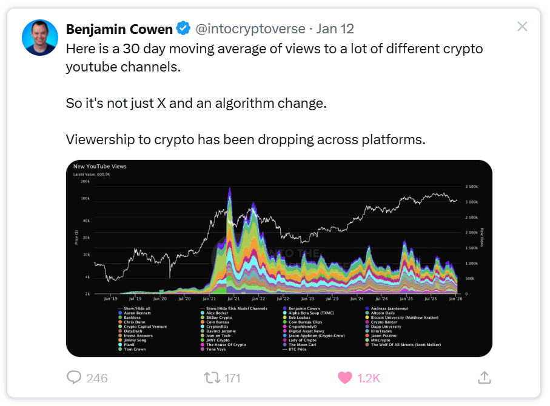
Benjamin Cowen @intocryptoverse · Jan 12 — "Here is a 30 day moving average of views to a lot of different crypto youtube channels. So it's not just X and an algorithm change. Viewership to crypto has been dropping across platforms."
X just nerfed crypto twitter. Nikita Bier, head of product, basically said CT has so many bots that they just throttled the whole thing. Not specific accounts… the whole thing.
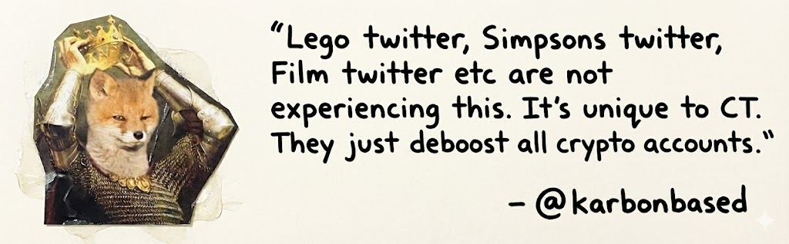
@karbonbased on @nikitabier's new X updates — "Lego twitter, Simpsons twitter, Film twitter etc are not experiencing this. It's unique to CT. They just deboost all crypto accounts."
This isn't a bear market thing. This is a "people actively don't want to see this because we totally cooked it" thing.
The uncomfortable reality
The uncomfortable reality is that not many people are interested in crypto content. Which is strange, because the tech is more interesting than it's ever been. Privacy tech, AI verification, dollar debasement, actual useful stuff. But the word 'crypto' carries too much baggage.
I think it comes down to two things:
Reputation. To most people, crypto means gambling. Casinos. Rug pulls. That friend who won't shut up about some coin. The industry has done this to itself, honestly. Years of scams and get-rich-quick nonsense means the default assumption is "this is probably a scam" - even when it's not.
It's boring. A lot of usable crypto tech right now is… banking. Payments. Trading infrastructure. What normal person wants to bring up stablecoins to their friends in their downtime? These aren't things people learn about for fun. Going to work at a bank or optimising your money management is a chore for most people. It sits in the 'utility' category of their brain. Not the 'interesting' category.
I was talking to a friend this week who has a YouTube channel, over a million subscribers. He recently made a video about the social media ban in Australia and touched on why data and privacy matters.
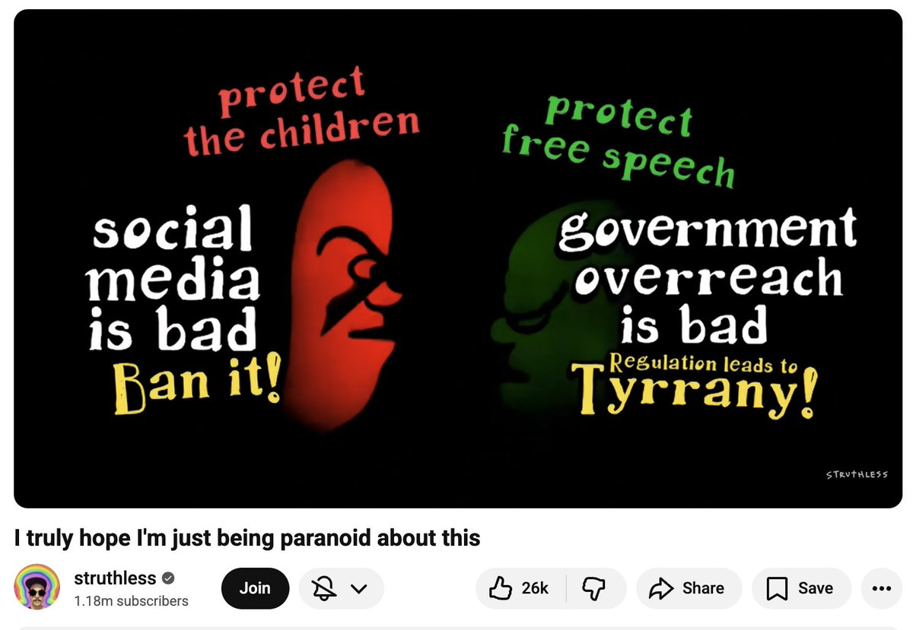
Frame from struthless video — "I truly hope I'm just being paranoid about this" (1.18m subscribers, 26k likes)
He knows he can't go deeper into 'crypto' though. Even though the tech is genuinely important, especially around AI safety and verification, he knows most people would instantly see it as a scam. Doesn't matter if it's not. The word 'crypto' anywhere near it and you've lost them.
We saw this recently when Adam Mosseri, head of Instagram, put out a post about AI content flooding feeds. His solution was cryptographic signatures to verify real content - fingerprinting authentic media at capture. The reaction wasn't "oh that's interesting" - it was immediate skepticism.
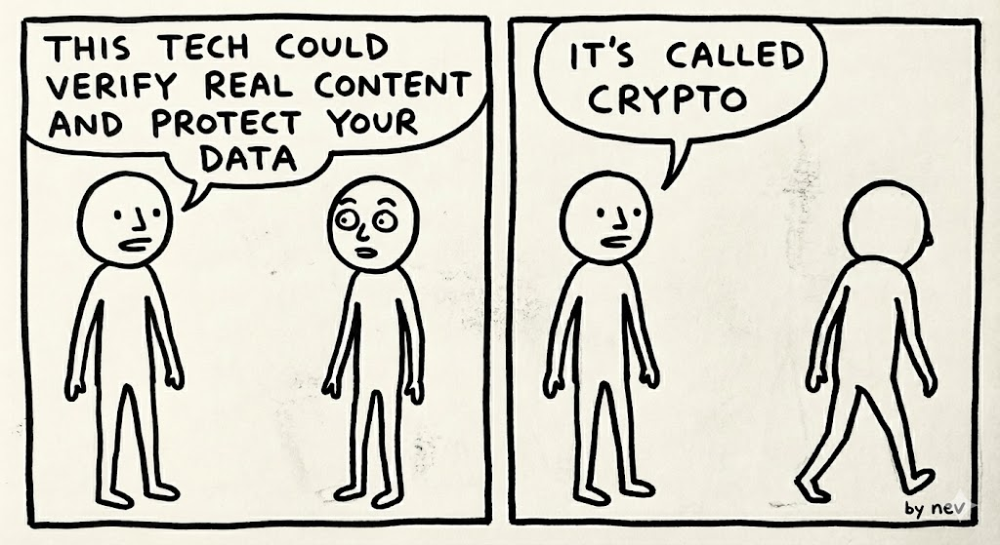
by nev
Crypto creators are already pivoting to self-aware slop instead, and immediately performing better.
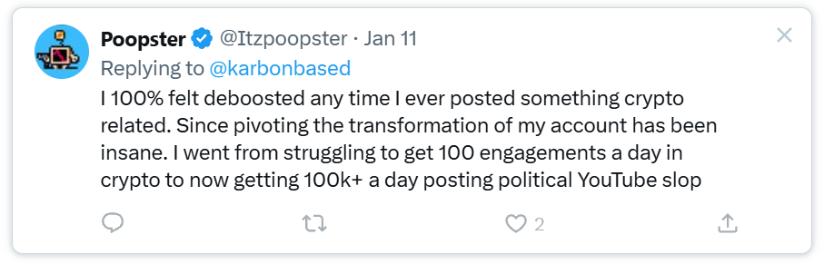
Poopster @Itzpoopster · Jan 11 — "I 100% felt deboosted any time I ever posted something crypto related. Since pivoting the transformation of my account has been insane."
The tech could genuinely help solve real problems. But nobody wants to hear about it.
So what do you do from here?
I don't have a clean answer. But I think if you're making content or building products with 'crypto' tech, you have to distance yourself from the word 'crypto' entirely. Talk about the tech indirectly, what it actually achieves, the problems it solves. The tech itself doesn't really matter, it can be invisible - it's ultimately about what it can do for the world or humans using it.
Crypto as a word is dead. It was brutally murdered. The tech though, is more alive than ever. Which is a strange place to be - the technology is finally doing interesting things, and the worst thing you can do is tell people about it.
I wrote this over a coffee after doom-scrolling CT and realising half my timeline is complaining about reach. More about me here > aaronnev.com
Why Bitcoin isn’t crypto anymore
The decoupling of Bitcoin from the rest of crypto is happening in real time and has been for a while. Jack Dorsey kind of just went and said it out loud.
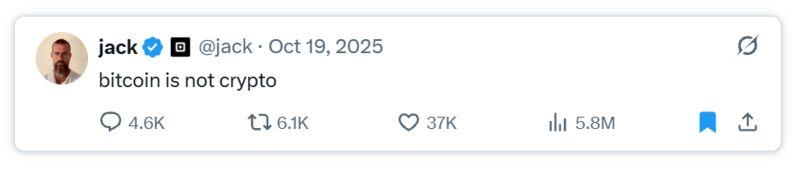
@jack · Oct 19, 2025 — “bitcoin is not crypto”
Let’s start with a hard truth: Bitcoin created crypto. It therefore, inherently is, crypto. So why would Jack say this? Well, I obviously don’t know, but I do agree with his sentiment.
Over time ‘crypto’ has been hijacked, both philosophically and technically. Sometimes accidentally, sometimes intentionally.
Whether ‘crypto’ is willing to accept it or not, it philosophically no longer holds a lot of the original Bitcoin ethos, which is because technically, like boiling frogs, lots of crypto has moved toward tech that looks nothing like it.
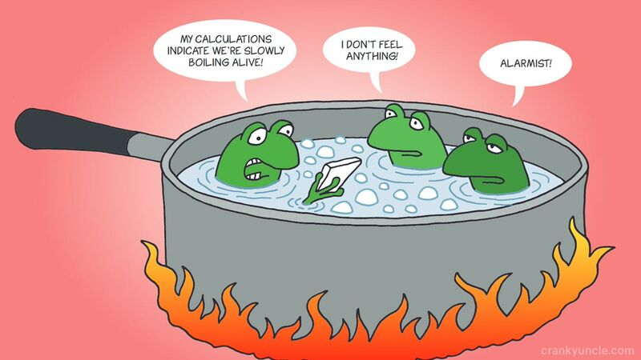
Many blockchains have far less decentralised consensus than most would realise… a couple of nodes the projects themselves own and run. In some cases projects set up validator nodes with service providers to pay for services via token emissions, and threaten to shut them down if they stop working.
Sure, obscured, but it’s still person A pays person B for a specific thing. Feels pretty centralised to me. Very not Bitcoin, too.
Decentralised governance? Maybe even worse. The votes that come from these projects to ‘decide what happens’ with ‘community consensus’ are almost entirely theatre now. One or two main holders (often foundations or teams) just deciding on the path they want. A PR stunt, more than actual decentralised mechanic — the premise of a governance token being something people actually laugh about at ‘the water cooler’ now.
To make matters worse, this is all often the wealthy elite holding said tokens, making said decisions. Again, not a full representation of the world at large. Not very Bitcoin.
Add in more of the core values — truly peer-to-peer. Is it that? Not really. Stablecoins get frozen quickly… by, you guessed it, an outside middleman.
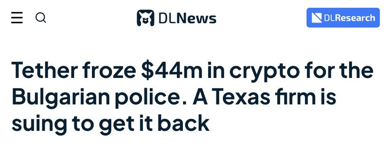
One of the many recent freezings of stablecoins, by a middleman
What about privacy? Up until recently it had completely left the conversation. Most don’t even care. But it is probably one of the most important things lost over the last few years. As @0xMert_ said: “Crypto without privacy is not actually crypto.”
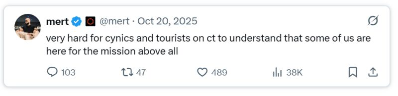
@mert · Oct 20, 2025
To top it off, crypto has been used to scam or gamble for the longest time, so much so that its brand is maybe one of the most untrusted in the world — seen by many as a means to make (or lose) money, not as a technology that, dare I say it… can change the world for the better. Bitcoin has found a way to slowly disassociate itself with this.
You see the hard tangible results of this in any search function on social media. I see it myself in my results — nobody wants or clicks on crypto, but they definitely click and search Bitcoin. On TikTok, crypto as a word was even shadow banned, which feels like it might have only stopped recently.
In the end, words are just words, but the word ‘crypto’ now means something different to what it originally did. Many in the industry embarrassed to say that’s what they do for work.
Bitcoin didn’t start or become what it is because people were looking to dump, profit or stand on top of the people around them, but because people saw it as a technology that could change the world — that the world needed — Satoshi being a very pure selfless example of that.
If you want my incredibly cynical, unfortunate take: most of crypto is just a derivative of Bitcoin, most just using the brand name to grift and profit off what it created in whatever means possible. I however say most with emphasis, because really, there are some amazing bright spots.
So what happens now?
Well, instead of ‘Bitcoin decoupling from crypto’, I think ‘crypto is decoupling from Bitcoin’. Bitcoin hasn’t really changed philosophically or technically in a while, but crypto has. This tangibly also shows in price action.
To me, it creates ‘two worlds of crypto’, a divergence, a huge crossroads the technology faces that is becoming more and more apparent.
Real Crypto
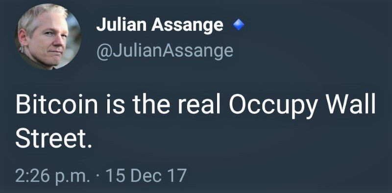
The first is projects that are doing similar to what Bitcoin did and is doing. Leaning more into the values that made it work in the first place. Or maybe even projects that have their own values to solve a problem that are just as important, becoming their own thing, that could birth other things — versus being some sort of derivative.
You can see this in something like TAO, it is arguably its own sector entirely, and its price shows it moves fairly independently. This is also the case with some of the tech in the privacy sector right now, like Zcash, Monero and even some new ‘post-blockchain experiments’ like Shift Foundation. Hell, even Jack Dorsey’s new P2P tech.
Most of this tech though, likely doesn’t even exist yet.
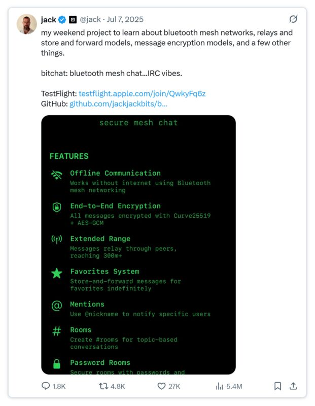
@jack · Jul 7, 2025 — “my weekend project to learn about bluetooth mesh networks, relays and store and forward models, message encryption models, and a few other things. bitchat: bluetooth mesh chat… IRC vibes.”
Pretend Crypto
The other world I don’t love as much — and I think is maybe a wolf in sheep’s clothing.
A lot of crypto is pretending it holds a lot of the original ethos, when in reality it isn’t true. They are just a regular centralised business dressed in Bitcoin clothing and called the same thing. They have some blockchain tech injected into it, parts of it, at least, but the reasons and mission is completely different.
This is what stablecoins are right now (fiat system with blockchain injected into it), a lot of current blockchains are this, and as mentioned above, the projects with pretend governance tokens are arguably this, too.
A lot of the new chains large institutions and banks soon build will likely also be this. Not Bitcoin… but instead something else, all while still claiming an intrinsic link to Bitcoin and its ethos, what it tried to do for the world, which just isn’t really true.
So…
This big ‘crypto’ crossroads is going to create more conversation about ‘different types of crypto’, what is and what isn’t. There is a very real divergence happening right in front of us. Both of these worlds of the tech will likely have large positive impacts on the world, but many would argue ‘pretend crypto’ is a way to kill ‘real crypto’ in stealth, something that’s been tried many times before. Others would say both existing is great for the industry, and have a place.
I personally think that crypto being adopted by the centralised world is amazing and can do many great things. Though only if the original crypto ethos and tech survives, is also embraced, is not shut down by this same world — by slowly turning the heat up and, like boiling frogs, is cooked alive into non-existence.
I wrote this over a coffee this morning… well, a few coffees. Mostly free thought from someone terminally online in crypto every waking minute. I normally make videos, but heaps of research and ideas die in my notes app as drafts, so thought I’d try a format out so less things died. You can check out some of those videos here.
If you liked it, let me know. If you didn’t, let me know too. My hope is to encourage a wider discussion and thought about the way we approach this tech, what’s happening, why, and its impact on the world.
Experimental creative studio from the frontier. Me and a bunch of AIs (okay, sometimes humans too). We make tools, websites like this one, new formats, weird media, workflow architecture, whatever this tech enables. Sometimes that's original IP. Sometimes it's helping others build things they couldn't before.
MemeLab
Crossover, 2024
Design your own memes and mint them as NFTs. GIF support, upload any asset, design with layers, add wordart fonts, mint it on-chain. Built by Crossover with decoderdev and diddy bread. Nobody really used it, but it's very cool.
Production company. Wallabies, Nathan's Famous, Gatorade, Nintendo. Commercial and branded content production across sport, food, and tech.
Blocmates
Creative Producer, 2025–present
Documentary-style tech explainers, making complex technology feel accessible and human. I love these lads, and look forward to creating many great things with them at the bleeding edge of tech.
Samsung Slideliner
Clemenger BBDO, 2014
A campaign that turned Samsung phones into a second-screen experience for live sport.
The years where I worked on hundreds of projects across every brand you can think of. Some highlights:
Samsung Slideliner (see separate entry)
Brands I worked with: Samsung, Dyson, Airbnb, Visa, Mercedes-Benz, Lululemon, Gatorade, Arnott's, Glenfiddich, Virgin Australia, eBay, Budweiser, Target, Lexus, Woolworths, Schweppes, Jim Beam, NAB, Telstra, Tourism Australia, and way more.
Everything from TV commercials to integrated campaigns to digital experiences. This was my advertising education — learning how to work at scale, communicate complex ideas simply, and ship work that mattered to millions of people.
I'm still collating the full portfolio from this era. Check back soon.
City Falls
Metal Band, 2008–2014
Where it all started. I played guitar and basically ran a metal band as a teenager.
This wasn't just playing shows — I was booking tours, managing the band, sorting merch, hiring security, dealing with venues, doing the whole thing. We toured up and down the east coast of Australia, playing dive bars, support slots, and festivals.
This is where I learned how to produce things from nothing, how to coordinate people, how to make something happen when you have no money and no connections. Just hustle and a dream.
The band eventually dissolved when we all grew up and went different directions. But the skills I learned here — production, logistics, creative problem-solving, making do with what you have — those became the foundation for everything that came after.
Sometimes I still think about those shows. The energy was unreal.
Real Market Cap
Crypto Tool, 2024–present
Crypto market data without the noise. Built to cut through the bullshit and show what actually matters.